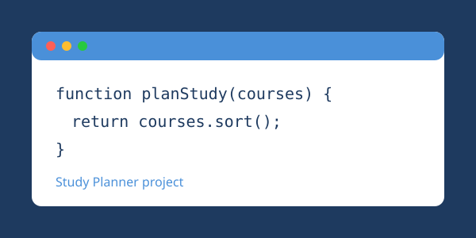
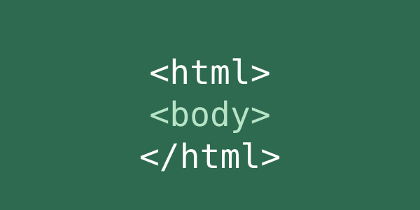

Hi! On this website you can read about the things I build and learn while studying computer engineering.
Latest Project: Study Planner
Study Planner is a small program that helps me organize my exam schedule.
I enter my courses and exam dates, and it sorts them so I can see what I should study first.
Building it helped me practice arrays, functions and sorting.

What I Am Learning: Web Programming
This semester I am learning how websites are built.
I started with HTML5, which gives a web page its structure.
This website is my first assignment, and it uses only HTML tags.
